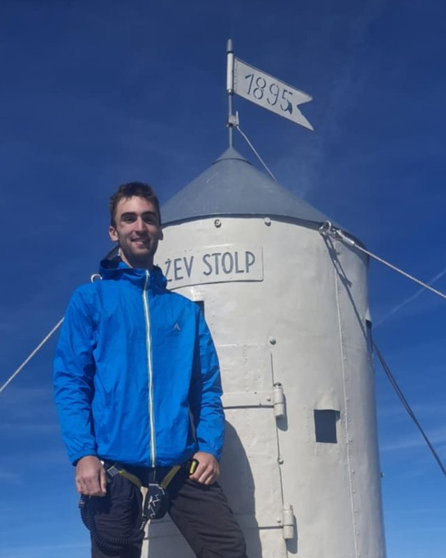

About us
Two travelers, a sailing boat and a used laptop.
How SpecScout started, and who is behind it: Johannes Körner and Erik Dierkes.


How SpecScout started
Erik and Johannes met after high school. Both were hitchhiking around the world, and by chance they ended up sailing across the Atlantic on the same boat.
Afterwards, Erik went on traveling through South America, while Johannes continued the trip around the world. The two never lost touch, though. Erik then started a first startup with another friend.
Life went on, until one day Johannes tried to buy a used laptop online. It was incredibly frustrating how hard it was to find used laptops that fit the requirements. Johannes started thinking about the problem and did some prototyping.
When it was clear that help was needed, Johannes called Erik, whose other business was failing due to unfortunate circumstances in the co-founder's life. The two decided to actually do this, and in 2025 they started working on SpecScout full time.
“It's the 21st century. It can't be that it's still this hard to find used products online that fit what you need.”
Johannes Körner, Co-Founder
That became SpecScout: complete, filterable product data for every listing, so customers find what fits them. For new products as much as for used ones.
The founders

Johannes Körner
Co-Founder & Operations
Background in physics and engineering. Responsible for software architecture and management.
LinkedIn
Erik Dierkes
Co-Founder & Tech Lead
Full-stack developer. Expert in API design, web development and UX.
LinkedInAnora Systems, owner Johannes Körner · Briachstraße 10, 88250 Weingarten, Germany · info@anora-systems.com · Imprint
Talk to us directly.
Questions about your catalog, about Enterprise, or just feedback: we'd love to hear from you.